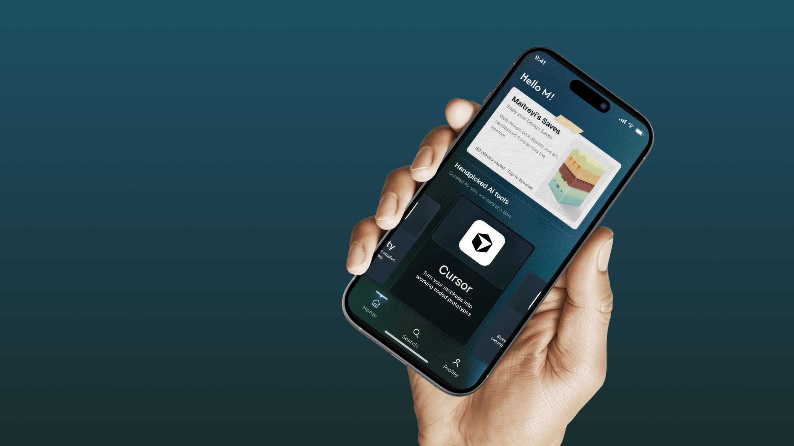
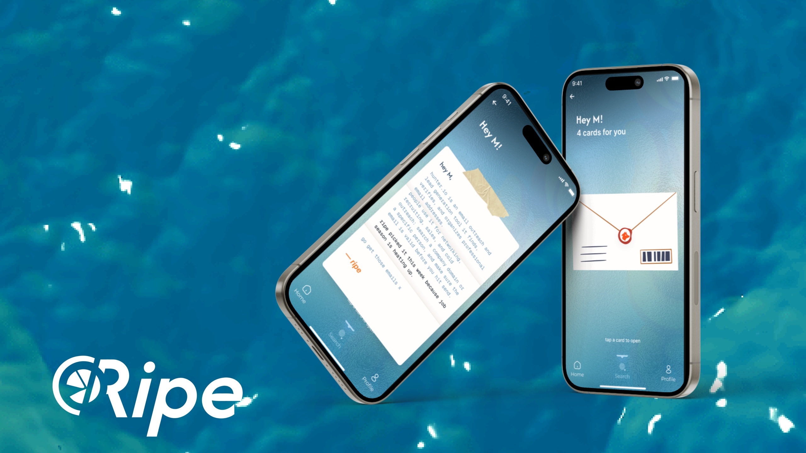
Handpicked AI tools for Maitreyi
An app that tells me straight up whether an AI tool is worth my time: ripe, situational, or skip. It's small. It's just for me. That's the point.
I'm an industrial designer, then a product designer, so I know both worlds but I'm not fully inside either. No UI/UX friends to text and ask "is this tool actually good?" Most people get that from their friend group. I don't have one.
And I save everything and watch none of it. Reels and videos, saved meaning to come back, never opened again. On top of that I'm mass-applying to jobs, and it's hard to stay motivated to learn new things.
I needed a filter.
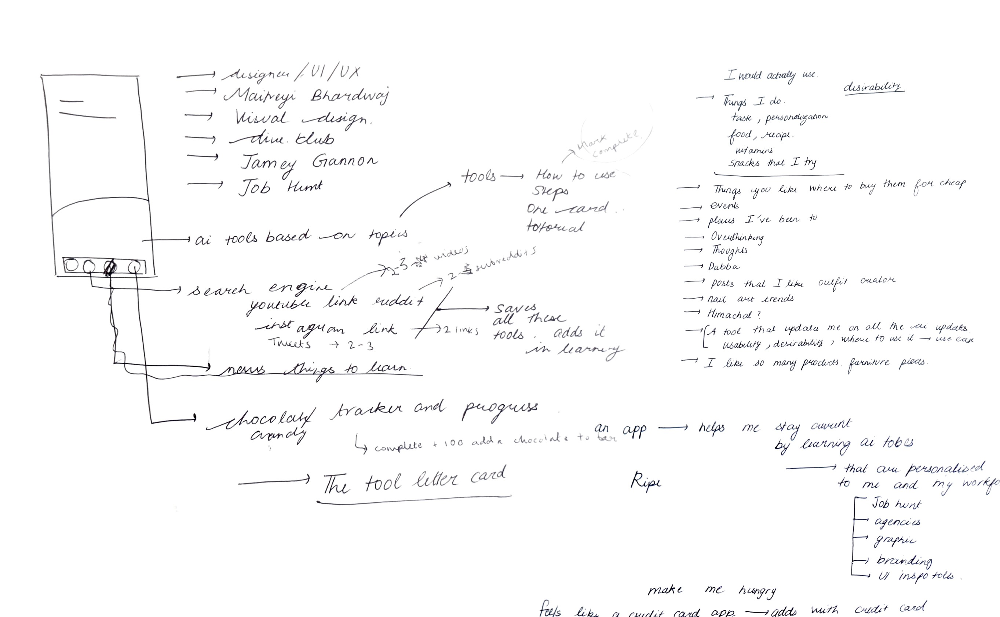
Ripe gives every tool one verdict: ripe, situational, or skip. That's what a friend would tell you.
It also catches what I save. A reel or a video goes in, and it turns into something short I actually finish, not another thing sitting in a folder I never open.
One straight answer on whether a tool is worth my time.
A saved reel or video goes in and comes out as something short to finish.
Then a chocolate-covered strawberry.
I stress-eat when I'm avoiding work. So instead of fighting that, I used it. Craving something or avoiding something? Open Ripe: fifteen minutes, one tool, done.
On the other side is a chocolate-covered strawberry, and my family buys it, because I actually earned it.
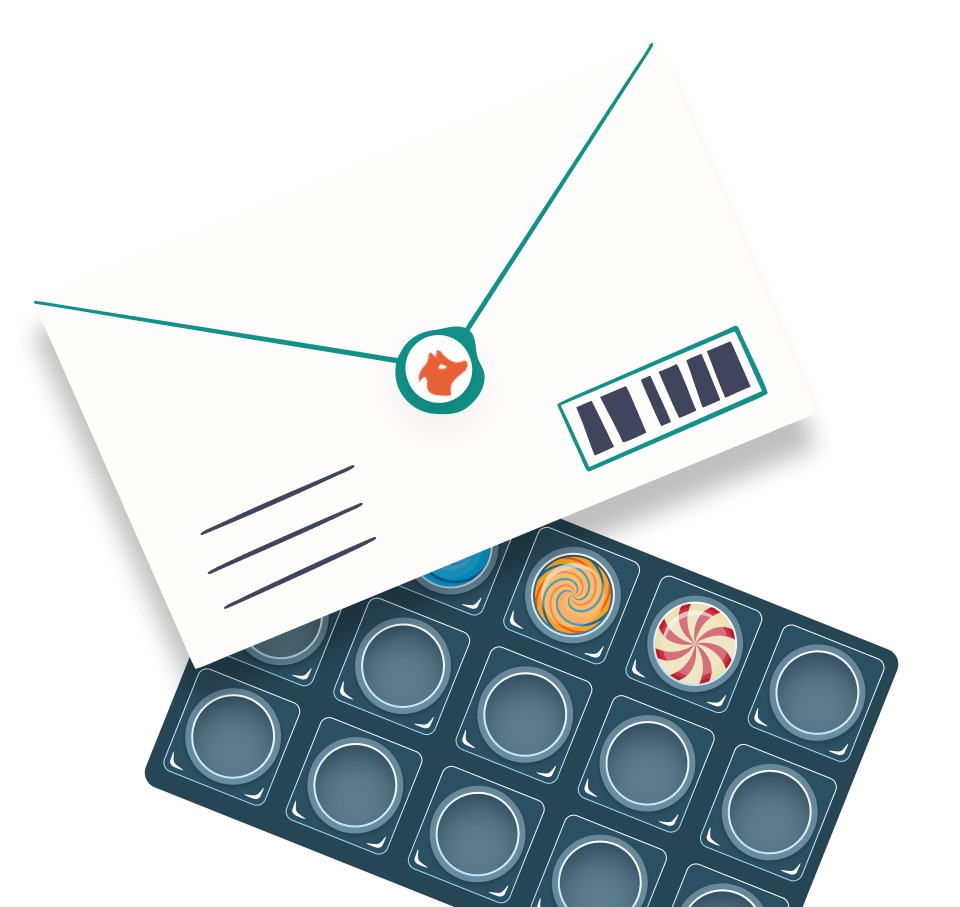
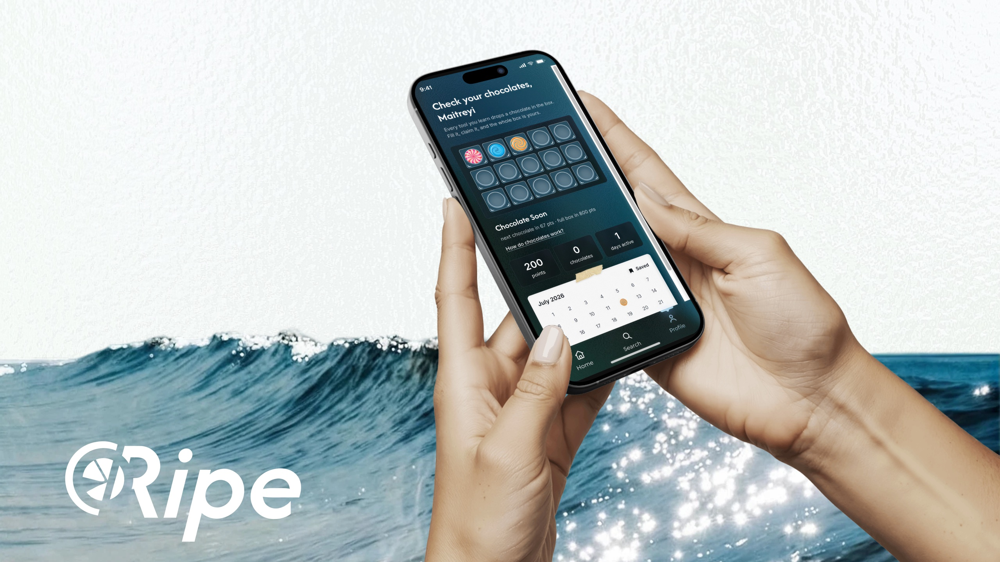
I started with two questions: which features, and what should it feel like? Fun, friendly, natural, soft, strong, a little like home.
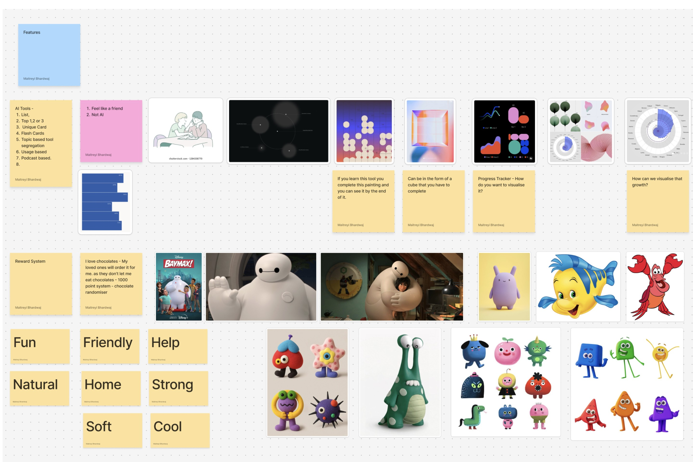
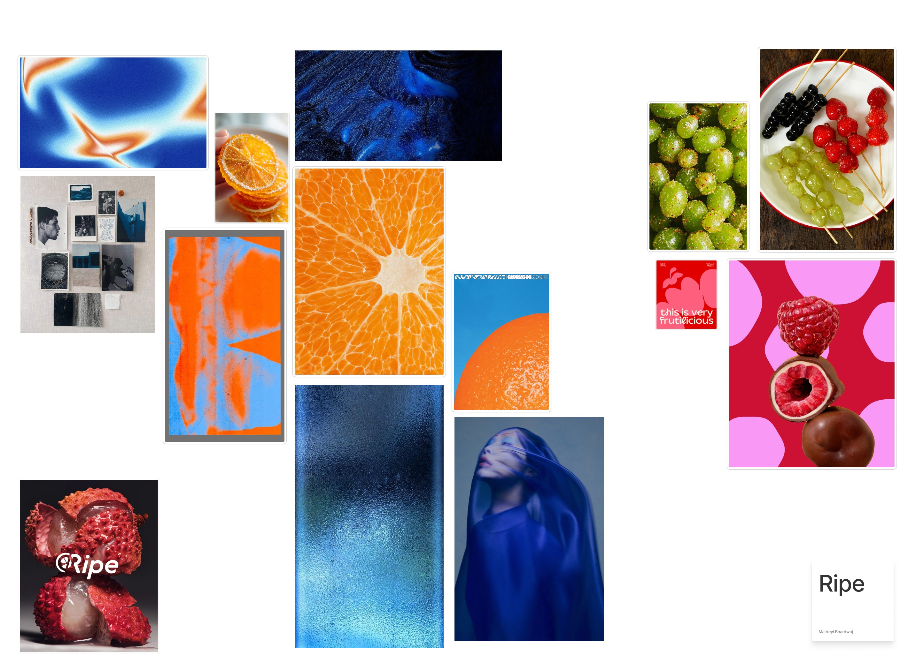
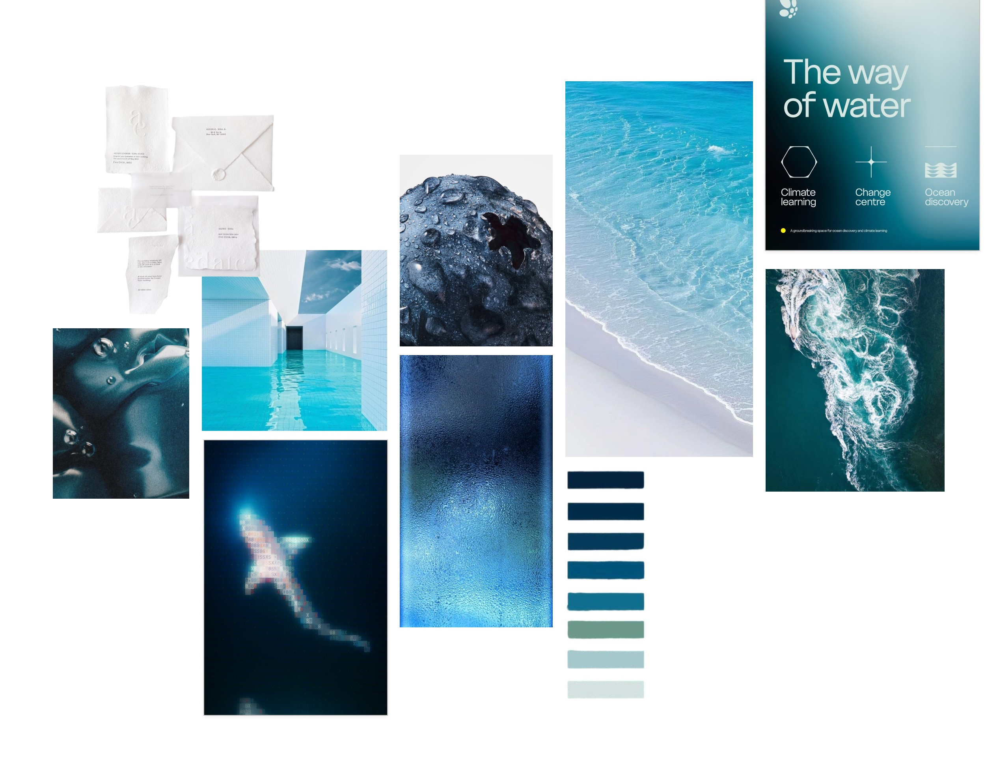
Ripe reads as citrus right away: orange, loud, obvious. I moved away from that on purpose. I wanted ripe to mean the feeling, not the fruit.
The blue-dusk tones feel calm and clear, like the moment right before I actually do something. Orange would rush me. Blue gives me room to reset first, then act. That matters most on the days I'm already stressed and low on energy.
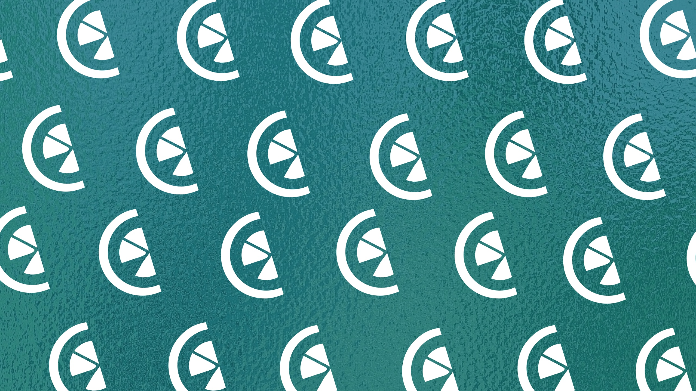
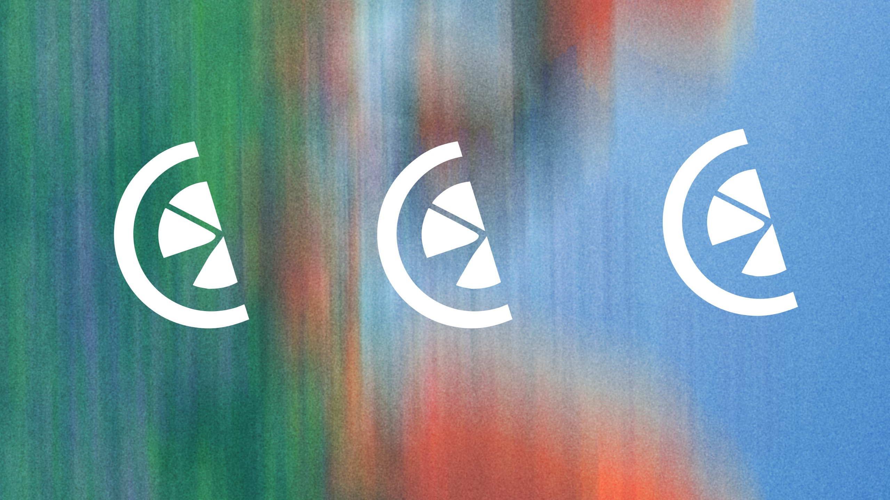
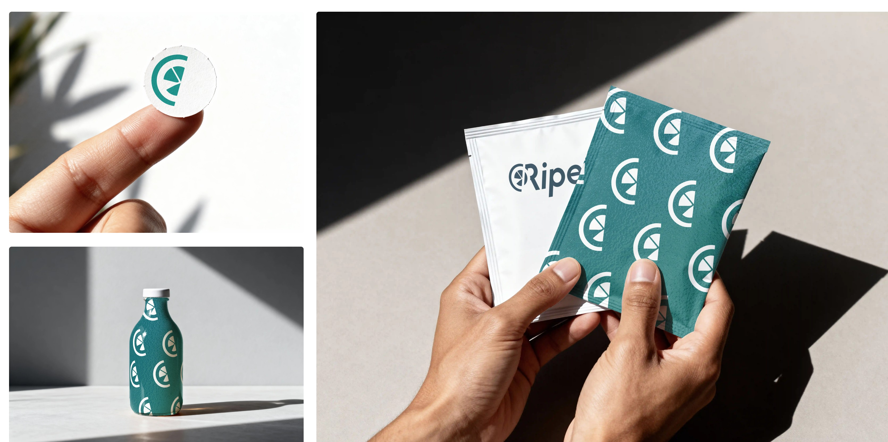
Three tabs: Home, Search and Profile. Home holds the card stack, my saves, handpicked tools and the YouTube intake. Profile holds the chocolate box, stats and a calendar.
Then I iterated on layouts, fonts and colours, from orange-accented drafts to the final blue.
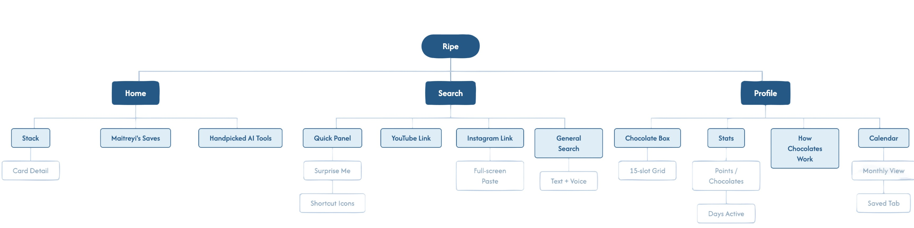
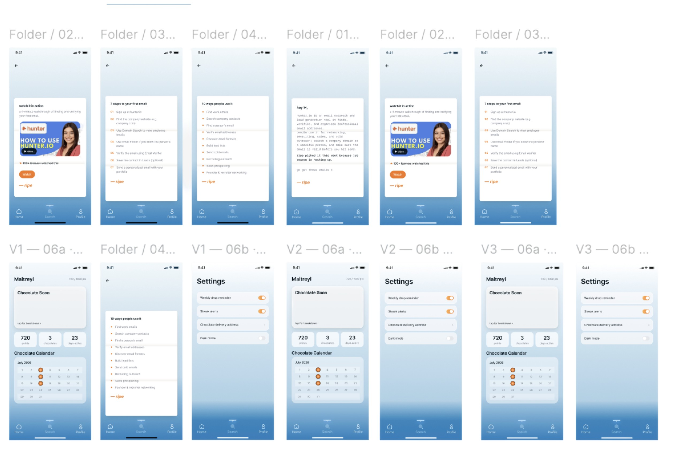
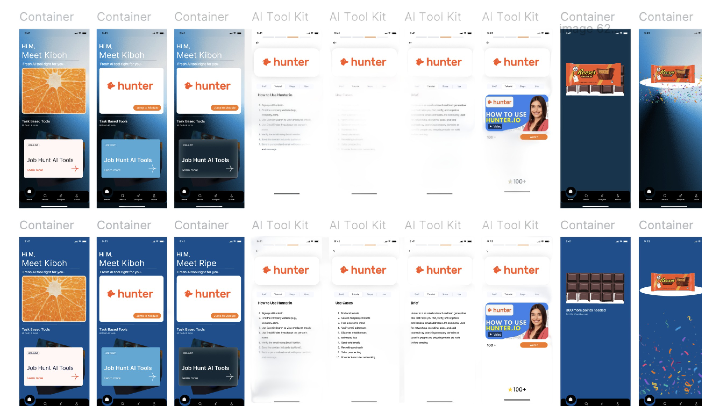
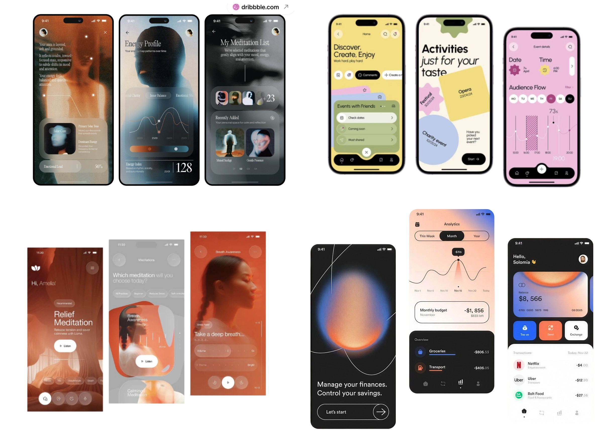
I tested directions that leaned futuristic, glossy and high-tech. They didn't feel right. I wanted something grounded, paper-like and tactile, closer to how I actually pick things up.
That's where the cards came from. Not a list or a feed, but something you open, like mail, small enough that learning daily doesn't feel like work.
I don't spend on myself easily, so the app doesn't either. I screenshot the milestone and send it to someone who loves me, and they buy the chocolate.

Designing it raised questions I haven't answered yet.
Do they roll over tomorrow, or are they gone? I've designed cards for four tools so far.
And when a chocolate box is full and claimed, does the next one start fresh?
I'd need search before they pile up like the reels did. A link with nothing useful should say so, not fake a result.